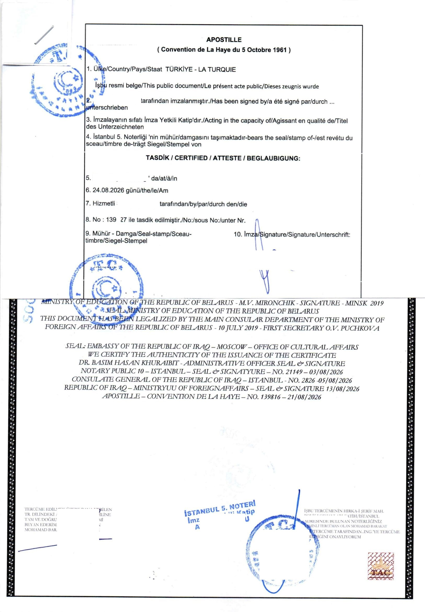

فاتح، إسطنبول — تأسست عام 2014

الطريقة الحديثة لتصديق مستنداتك من أي مكان في العالم. مستوحاة من كتّاب العدل الموثوقين عبر الإنترنت في الولايات المتحدة، تتحقق خدمة التصديق الإلكتروني من مستندك عبر مكالمة فيديو آمنة، وتصدّق عليه بختم أبوستيل كامل، وتسلّمه إلى بلدك — حتى خارج تركيا. أي مستند أصلي وحقيقي مؤهل؛ ولا يُرفض سوى المستندات المزوّرة أو المعدّلة.
شارك مسحًا واضحًا لمستندك عبر واتساب للتحقق الفوري من الأهلية والحصول على عرض سعر.
انضم إلى مكالمة فيديو مباشرة قصيرة وسجّل مستندك من جميع الجوانب. نتحقق فورًا من أنه أصلي وحقيقي — بموعد مسبق فقط.
نصادق على مستندك وننجز إجراءات الأبوستيل لدى الجهات التركية المختصة نيابة عنك — بالكامل عبر الإنترنت.
استلم نسخة PDF المصدَّقة خلال 1-2 يوم عمل، والنسخة الورقية المختومة بالأبوستيل عند باب منزلك — في تركيا أو أي بلد آخر — خلال 3-7 أيام عمل.
يتطلب التصديق الإلكتروني مكالمة فيديو مباشرة للتحقق إلى جانب تسجيل فيديو يُظهر جميع جوانب المستند. بهذه الطريقة نضمن نفس المصداقية القانونية التي يوفرها موعد كاتب العدل الحضوري.
يمكن لأي مستند أصلي وحقيقي الحصول على تصديق أبوستيل — شهادات الميلاد، شهادات التخرج، الأحكام القضائية، التوكيلات الرسمية، الأوراق التجارية وغيرها. لا تُرفض سوى المستندات المزوّرة أو المعدّلة.
سلسلة مستندات حقيقية أُعدّت وصُدّقت عبر مكتبنا — من وزارات الخارجية إلى القنصليات وصولًا إلى الأبوستيل النهائي. هذا هو مستوى العناية الذي يحصل عليه مستندك.

هذا أبوستيل حقيقي حصلنا عليه لأحد العملاء — صادر عن كاتب العدل رقم 5 في إسطنبول ومصدَّق بموجب اتفاقية لاهاي لعام 1961، مع ظهور كل ختم على طول المسار: من التصديق الأصلي لكاتب العدل والمترجم، مرورًا بوزارات الخارجية والقنصلية التي صدّقت عليه، وصولًا إلى ختم الأبوستيل النهائي.
مبنية على معيار التحقق عن بُعد نفسه المعتمد لدى كتّاب العدل الأمريكيين عبر الإنترنت — تحقق مباشر من الهوية عبر الفيديو، مراجعة مسجّلة للمستند وتسليم رقمي آمن للعملاء في الولايات المتحدة وكندا وأمريكا اللاتينية.
تصديق أبوستيل كامل وفق اتفاقية لاهاي، مقبول لدى المحاكم والجامعات ودوائر السجل المدني في جميع الدول الأعضاء الـ92 — من لشبونة إلى كييف، دون أن تغادر منزلك.
حيث لا يكفي الأبوستيل وحده، نتولى ترتيب التصديق القنصلي، تصديق السفارات وموافقات الوزارات في إسطنبول وأنقرة — وصولًا إلى بلدك الوجهة.
رسالة واحدة على واتساب تبدأ أيًا من هذه الرحلات — من فاتح، إسطنبول، إلى باب منزلك.
مستعد للتحقق من مستندك عبر الإنترنت؟
راسلنا على واتساب — عرض سعر مجاني